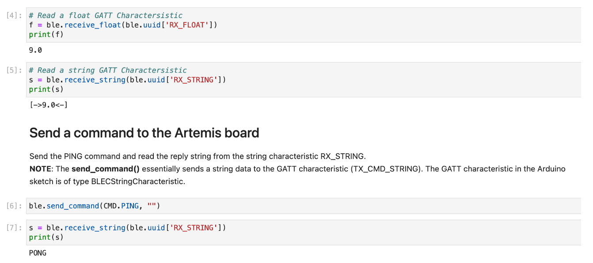
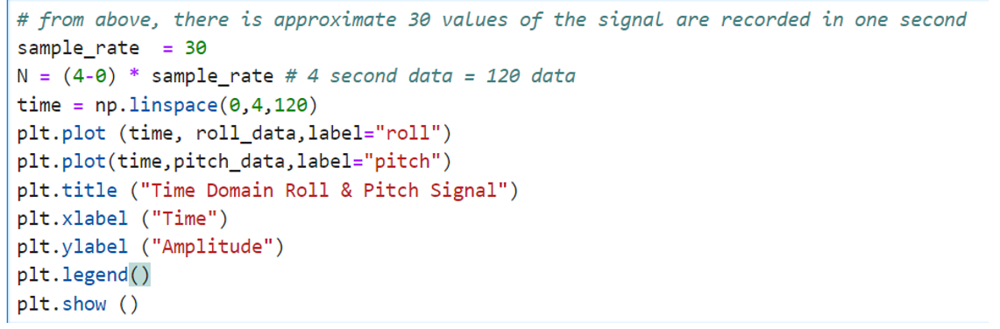
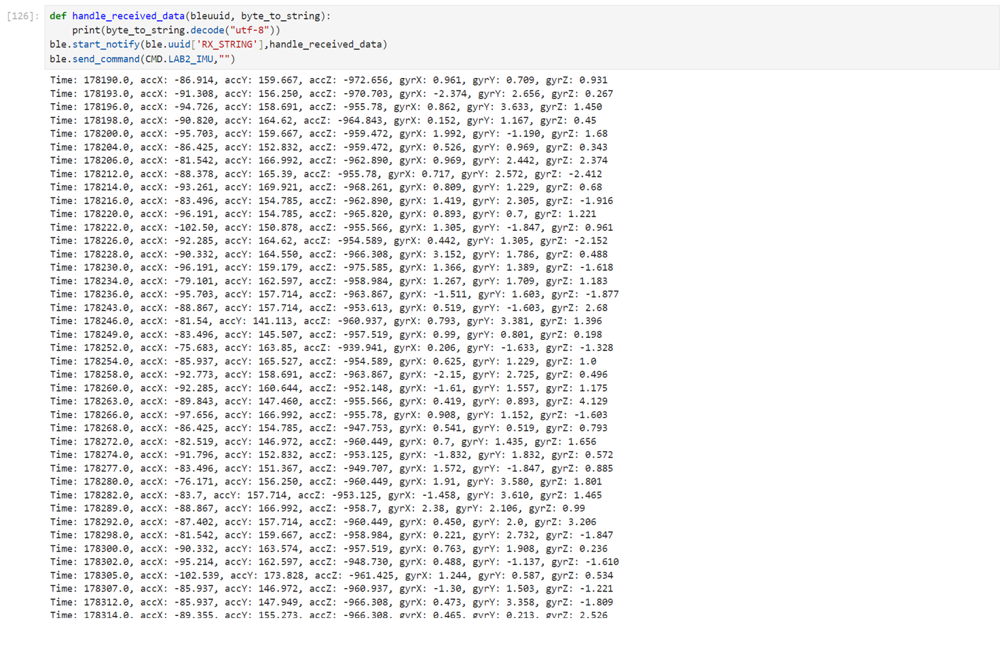
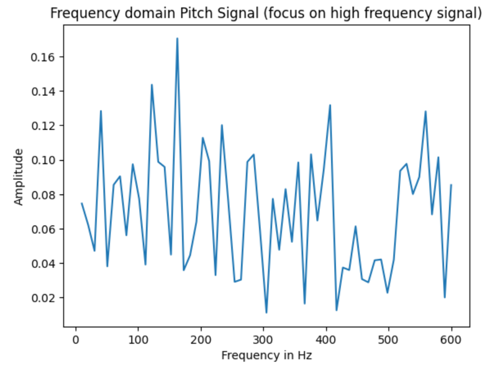
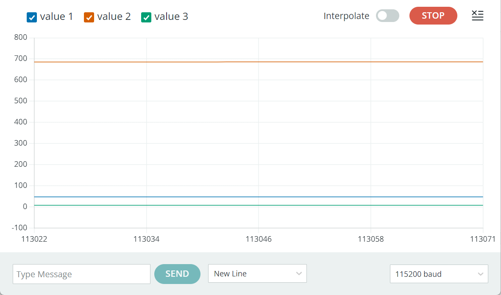
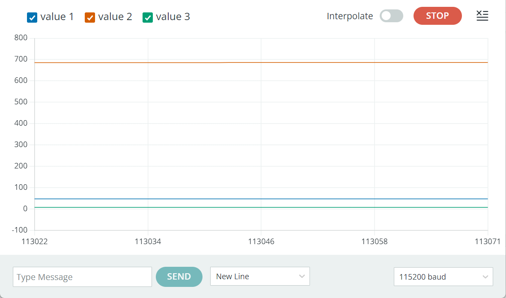
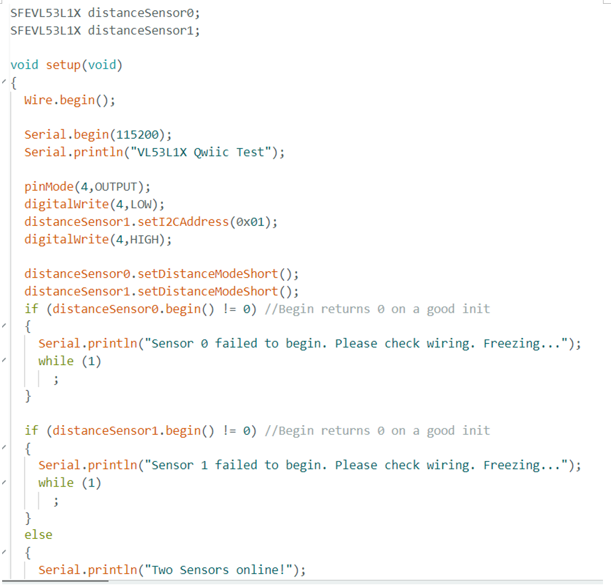
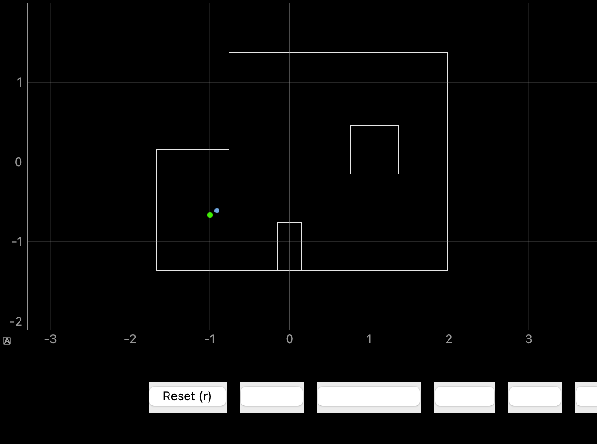

Labs


ft243@cornell.edu
Fengkai TANG was awarded the degree of BEng Hons Electrical and Electronic Engineering in the First Class classification from The University of Nottingham.
Fengkai TANG now works on MEng Electrical and Computer Engineering program at Cornell University, where he had a deeper understanding on AI/ML, embedded computing and CS Algorithms.
According to the Setup instructions, install the latest Arduino IDE and Sparkfun Appollo 3 support software on the laptop. After installing everything correctly, there are some start-up examples in the Arduino IDE, and we start our journey to Arduino.
Load the blink example file just following the steps in the online instruction webpage. Different from the tutorial, the real board we were using is RedBoard Artemis Nano instead of BlackBoard Artemis. Also, choose the corresponding port otherwise the Arduino IDE will not find the device to upload the code. As shown in the video, the delay time is set to 1000ms, that is, the LED should blink every 1 second.
To use the serial monitor, the baud rate should set the same as the baud rate definition in the code. If not, the serial monitor may display wrong information. In this task, the baud rate is set 115200. In the code, we print some lines first, and in the loop, the serial monitor will output what we type in. The board is continuously reading and then outputting on the serial monitor.
The board continuously reads the analog signal and outputs to the serial monitor. From serial monitor we can see the real-time temperature. We can notice the small increase of the temperature by touching the board chip.
The board will analyze the signal by carrying out FFT operation. The loudest frequency will be displayed in the serial monitor in real time. The loudest frequency represents the frequency of the loudest signal received by the sensor.
I planned to let the chip detect musical A4 note. Referring to the Microphone Output example code, I knew the frequency of musical A4 note is 446Hz. Therefore, a basic logic code can be written as if the loudest frequency is 446Hz, turn on the LED, otherwise turn off the LED. Coding is quite simple, we can just combine the Task 1 and Task 4 code. Code looks like this:
if(ui32LoudestFrequecy == 446)
{
digitalWrite(LED_BUILTIN, HIGH);
}
else
{
digitalWrite(LED_BUILTIN, LOW);
}
Follow the prelab steps, which are detailed, to set up the environment for python and BLE. BLE (Bluetooth Low Energy) is used for communication between Arduino board and Laptop. Jupyter lab will be used to run the python code. I installed python myself but strangely I did not install python3. In this case, any “python3” command must be replaced by “python” command. Initially I did not realize this problem, so I spent lots of time creating the virtual environment. Another problem here was that the virtual environment cannot be activated. Use the command “Set-ExecutionPolicy -Scope CurrentUser -ExecutionPolicy Unrestricted” first and then the virtual environment can be activated successfully. Load the python files through the jupyter lab and set up the necessary libraries for Arduino, we can then start our first step: find the MAC address.
After running the ble_arduino.ino, the MAC address for my board is c0:89:d:6c:2d:4b. Remember that the MAC address should be 12-digit long, so I left padded one 0 to make MAC address c0:89:0d:6c:2d:4b.

Use uuid4() to create my own unique UUID for connecting my laptop and my nano board. Replace the BLEService UUID in ble_arduino.ino file and replace the ble_service in connections.yaml file with this generated UUID. Also, in connections.yaml file, update the MAC address with our address. One important thing here, after changing the parameters in ble_arduino.ino, we should update again otherwise we cannot connect to the device.

A good start is to try the function in demo.ipynb file to test if all the libraries are working fine. After changing the configuration of connections.ymal file and ble_arduino.ino file, it is expected to connect successfully. In demo.ipynb, we tested the receive_float, receive_string function and PING command. Everything looks good and we can start to do the task. All the task codes will be written in demo.ipynb file.
The task is that the computer will send a string to the nano board, and we need to get the nano board to read this string and add a specific prefix “Robot says ->” and suffix ":)". The code is very easy to implement, we need to extract the string, then prefix append the string and then append the suffix.

Then, in the python file, call the ECHO command and use the receive_string function we have tested in demo to receive the generated string (with prefix and suffix).

This task requires a GET_TIME_MILLIS Command to get the time. We can use millis() function and convert it to a string. Add the prefix “T:” and send it back to the laptop. The curly bracket was added here because without it nano board cannot be updated with the code.

Before calling GET_TIME_MILLIS command, we should add GET_TIME_MILLIS to cmd_types.py and ble_arduino.ino. If not, we cannot call this command and cause an error.

At last, call this command and we should get the time with “T:” prefix.

With the help of callback function, a notification handler can be set up to receive the string value. I named my callback function stringhandler. In my callback function, the string is split with a colon, and use a global variable “time_value” to store the time. Use ble.start_notify() function to start the notification handler. We can see below, “time_value” is only the time while “s” contains “T:” and time. This means that the notification handler is working well.

We can find a loop() function in ble_arduino.ino file, and in loop() function we can find a write_data() function to send data. Therefore, I planned to change the write_data() function to make nano board send time data continuously in the loop.

Collect 5 seconds time data, and put all the time data into “data_collector”. Use the notification handler again to extract the wanted time data.
The length of the “data_collector” is the number of time data we have received. We can use the last element of “data_collector” minus the first element of “data_collector”, which is the time duration used for transmitting data. Use the number of time data divide the time duration (remember to change microsecond to second), and this is the data rate.
Create an array to store the time stamps. Make it global in case other functions will access it.

Similar to Task 4, the code needs to be in a loop. Write the code in the write_data() again and comment the code used for Task 4. The if logic prevents from over-filling the array. At last, timeStamps[] array should contain 100 time data.

Similar to Task 2, create a SEND_TIME_DATA command (remember to add it in cmd_types.py file). After all the time data is sent, I designed to send one more “END” data to show all data has been transmitted.

I designed a new callback function stringhandler2, which can detect the “END” message. However, it seems that it is not very useful. I think t I think this design might be useful in the future, so I keep it here.
Again, write the code in the write_data(), which is in a loop. Each element in time stamps array and temperature array should correspond, so every time put in a new element, the element number should be the same (timeStampIndex in the code shown below).

Add a new command GET_TEMP_READINGS. Each time the nano board send back a time data and a temperature data split with a comma.

A new callback function stringhanlder3 was designed. Split the message with comma and put the first one into time list and the second one into temperature list. At last, 100 corresponding time data and temperature data is sent and stored in each list.


One method is an instant send method and one is a batch store and send method. The instant send method sends the data as soon as it is generated (Task 4), the advantage is that the data can be monitored in real time, the disadvantage is that if the connection is unstable, it will lead to data loss. The disadvantage is that the data can be lost if the connection is unstable. The batch store and send method is that the data is stored locally first and then sent later. The advantage is that the data will not be lost, the disadvantage is that there may be a delay.
384kB = 384 * 1000 Byte = 384000 Bytes = 384000 * 8 bit = 3072000 bits
If the timestamp is a 4-byte integer and the temperature reading is a 4-byte floating point number, then the size of each data point is 8 bytes. 384000 Bytes / 8 = 48000 data point. However, this is not possible because not all the RAM will be used for sending data.
I modified ECHO command to let the board send back the exact message that the computer sends to the board.
I tested the data rate when the message byte was increased from 5-byte to 120-byte, so I called ECHO_BYTE command 115 times. Each time I calculated the data byte and appended it to the data_rates list.
Plot the figure. The data rate increases as the packet size increases, indicating that sending larger packets is more efficient in terms of data transfer per unit of time. Overhead is introduced by short packets while larger packets help to reduce overhead because larger packets usually mean a smaller percentage of overhead (e.g., packet header information, acknowledgment information, etc.) per packet.
Higher rate did not lead to any missing data, which means that BLE transmission is quite reliable. However, some packages may be lost due to extremely high rate.
In this lab, I got more familiar with the Nano board by doing the provided examples. Also, I used BLE to connect the laptop and the board to send data, which is a convenient and reliable method. I met some problem on virtual environment and online tutorials did help a lot.
In Lab2, we will get more familiar with 9DOF IMU Sensor. Basically, we tested the accelerometer and gyroscope function of IMU and played with the RC car for more information about itself.
Below is a figure of Roll, Yaw and Pitch which we used throughout the Lab2. Understanding it is beneficial for calculating roll, yaw and pitch data by accelerometer and gyroscope.
First, connect the IMU to the Artemis Nano board.
Below is a video showing that the IMU example code is working fine. I added some code to let the LED blink three times each time the board is uploaded so that I can know it starts working. When I rotated the IMU, I found that the accelerometer and gyroscope value were changing, which was helpful to calculate roll, yaw and pitch.
AD0_VAL is the last bit of the I2C address. The default it is set 1 but when the address jumper is closed, the value becomes 0. From datasheet, the IMU slave address is 110100x. “x” here is controlled by AD0_VAL. This means that two IMU can be connected using the same I2C bus at the same time. To do this, one device AD0_VAL should be set low and the other should be set high.
Using the serial plotter, we can see that when the IMU is stationary, there is some noise. When the IMU is moving, we see the change and the noise seems to be more significant. If necessary, after some movements, we can restart the IMU to make the data more reliable.

Use atan2() to calculate pitch and roll with accelerometer sensor readings. The formula was provided in the lecture example code.
From the video we can see that the accelerometer was quite accurate. The two-point calibration was not a need in my case.
It was counted that 30 sets of data were generated per second from the serial monitor, so the sampling rate should be 30. I planned to analyze 4-second data. Roll and Pitch data in time domain:
Below is frequency domain figure. We can see that the noise amplitude is too low to be noticed. As pitch and roll frequency domain figures are so similar that I only posted pitch ones.

If we focus on the low frequency part, we can notice that amplitude of 10Hz got close to 0. Plus, the amplitude of the high frequency part is very small, we don't need a low pass filter, and the data sheet shows that this IMU comes with a low pass filter, so there is even less need to add a low pass filter.
Since my sample rate is 30Hz, and according to Nyquist's law of sampling we know that the highest frequency (Nyquist frequency) at which a signal can be captured and reconstructed without ambiguity is 15 Hz. So it makes sense to set the cut off frequency of my low pass filter to around 15 HZ.
After applied low pass filter, there was not too much difference.
From figure below, we can see that gyroscope data was flat, which means it was not bothered by noise. The disadvantage is that the gyroscope data drifts as time goes by. The drift eventually will be so significant that it influences the calculated degree. Also, I found that the longer delay we introduce in the loop, the larger the gyroscope will drift. Therefore, we should avoid too much delay when operating.
 

By the video below we can see that there are always some errors between gyroscope pitch and accelerometer pitch. One possible reason is that gyroscope pitch data is obtained by integration, the error is always in the integration and there is no way to eliminate this error. Changing the sampling frequency does not help a lot with this problem.
As accelerometer has noise and gyroscope drifts, a complimentary filter could be used, which takes part of accelerometer reading and part of gyroscope reading to compute the output. The weight alpha was set 0.1 in my case.
By using complimentary filter, the noise effect was heavily reduced. One thing to mention here is that do not write the variable definition in the loop, otherwise each loop the variable will be given the initial value and lead to a problem.
Use a flag to control data collection. First, we connect the Artemis to the laptop via Bluetooth. Then, we send a command to make the flag True. As a result, the time-stamped IMU data is stored into an array.
Delete all the delays in the loop. The sampling rate is around 233.33 data per second. Roughly every 4ms one data is transferred. Artemis can run the main loop at very high speeds, typically tens of kilohertz, which far exceeds the data update rate of most IMUs.
Storing the data for each sensor separately improves the clarity and maintainability of the code. So I used different arrays to store data from different sensors. Although the size of the float data will be larger than int, it is best to use float to store data because our data comes with a decimal point, which is important information. Be careful about the array size. I initially set size 200 and caused overflow!
Float is 4-byte size. All my data is float, so a set of data needs to use 28-byte. Artemis has 284k byte then 284k/28 = 10142 sets of data, roughly 300 seconds of data.
The vehicle runs so fast that it is very hard to control. It was discovered that the velocity of this vehicle is not changeable. It takes so limited time to accelerate to its maximum speed.
We setup the Time-of-Flight (ToF) sensor, particularly VL53L1X. At last, we connected a QWIIC Breakout Board to the Artemis and two ToF sensors and one IMU are connected to the Artemis by connecting to the breakout board.

The I2C device address of the ToF sensor is 0x52, but two ToF sensors will use this address. To use the sensors simultaneously, one approach is to programmatically shutdown one of them, namely Sensor 1 for understanding, through shutdown pins (soldering the Sensor 1 shutdown pins to one of the Artemis pin, in my case, I used pin 4), change the address that is ON (Sensor 2) so they will not conflict and then turn on the sensor which is shut down before (Sensor 1). After doing so, two ToF sensors now are using different address and can work simultaneously.
A brief sketch of the wiring diagram is shown below. One ToF Pin XSHUT is soldered to connect the Artemis Pin 4 for changing the address.
One of the ToF sensors has to be placed at the front of the car because we need to know if there are obstacles in the direction the car is going. The other ToF sensor could be placed at the front of the car to give a more accurate reading, but I don't think that would make much sense, we only know what's in front of us and not what's to the side. It could also be placed in the side position, so we have information in both directions.
The figure below shows the connection between the ToF sensor and the Breakout Board. Red – Vin, Black – GND, Blue – SDA, Yellow – SCL for soldering reference.

By running the example wire_I2C file, we can see the address of the ToF. It is shown 0x29, which is different from the 0x52 in the datasheet. Look closer at the datasheet, we can know the least significant bit is read/write bit. Take this bit out we can find that the left seven bits are exactly 0x29. So, the least significant bit is not considered into the address.
Now there are only two modes in ToF library, which are short (1.3m) and long (4m) modes. The short mode offers a higher accuracy while the long mode has the advantage of longer distance detection. Personally, I think 1.3m is an enough range for the robot to react and its data is less affected by the noise. If the speed of the car is really fast, the long mode can be chosen for a longer adjustment distance. In this lab, I chose the short mode to test the ToF.
I planned to test the data at every 100mm (therefore from 100mm to 1300mm) to see the accuracy of the ToF sensor under different lighting conditions. When testing, I found that one of my ToF sensors have a around 100mm blind spot, which means that the sensor cannot detect the obstacles that are too close the sensor. According to the testing results, I found that it is accurate and reliable. The lighting conditions have a little effect on the results, but generally, the results under dim lighting conditions have a higher accuracy.
As discussed in the Prelab section, connect two sensors, turn one off, change the address and turn on the sensor. Then, two ToF sensors can be used simultaneously.
The video below shows that the two sensors worked well.
To test the sensor speed, we can use millis() function to see the duration spent to send two data.
From the result below, it was found that it used about 100ms to generate one data. The limiting factor are a lot, such as, the delay function, the serial print function used in the loop, and the baud rate and so on.
Similar to Lab 2, use BLE to transmit the data from the Artemis to the laptop. Create a handler in python file to process the data.


ToF sensor is an active infrared distance sensor. It emits infrared radiation and receives the reflection infrared signal after hitting an object. The time used between transmit and receive can be used for calculating the distance. The other kind of infrared sensor is called passive infrared sensor. It only receives the infrared signal emitted by other objects. We should use active infrared sensor such as ToF to measure the distance. There are a few factors that can affect the accuracy of an infrared sensor. For example, interference from external light and smooth or reflective surfaces can degrade accuracy.
I tested different color such as red, black and yellow and smooth or reflective surface, the results shown that it does not really influence the accuracy. However, when I tried to move the obstacle far away from the sensor, such as 1m, the black obstacle measurement was not so accurate. This may be caused by long distance but I chosen the short mode, and dark obstacle absorbs more light so the light energy returned to the sensor is less.
We will use two dual motor drivers to control two motors. We should select appropriate pins to control the dual motor drivers. One motor is connected to pin 6 and pin 7 and the other motor is connected to pin 11 and pin 12. These pins are chosen due to their PWM capabilities. These pins are also capable of analogWrite function as “~” shown in the datasheet. The circuit diagram is shown below.
We have 650mAh and 850mAh batteries. We will use both of them, and the smaller capacity battery 650mAh is connected to the Artemis board while the larger capacity battery 850mAh is connected to the dual motor drivers as the drivers consume more power. The reason why two separate batteries are used is that this avoids the transient effects, further avoiding the restart of the Artemis caused by large current changes.
For testing we do not solder the pin Vin to the battery yet, so we use power supply instead to power up the motor drivers. As the output voltage of the 850mAh battery is 3.7V, so the power supply is also set 3.7V. This power supply positive terminal is connected to the driver Vin pin while the negative connected to the GND pin. The hook of the oscilloscope needs to be hooked to OUTPUT and then the clamp to GND. We had the common ground, so the reading was accurate.
I set pin 11 zero so it would not output any PWM signal. Then I controlled pin 12 to output PWM signal by changing the parameter in analogWrite function. It was found that too small duty cycle cannot make the wheel rotate while too large duty cycle is so powerful and noisy. Therefore, for testing I chosen 160/255 duty cycle. Another thing to mention is that the two motor speeds are different under the same duty cycle, and this is probably due to the mechanical problems. This will be discussed further later.

I set duty cycle 160/255 and the peak-to-peak voltage is 3.7V. The average voltage should be 3.7 * 160 / 255 = 2.3V, which is near to 2.44V shown on the oscilloscope. Adjust the duty cycle, we can see that the time for ON state was changing. Here I adjusted the duty cycle to 100/255.
To let the motor spin in different direction, set pin 12 zero and control the motor by adjusting the duty cycle of pin 11 PWM. Obviously, for each driver, when one input is HIGH and the other is LOW, the wheel will spin in one direction. Reverse the direction we can simply reverse the state of each input.
The video below shows that one dual motor driver is working expected with 850mAh battery driving the motor driver.
The video below shows that both motor drivers are working as expected with 850mAh battery driving the motor drivers. One point to mention is that do not short the Vin pin and GND pin otherwise it breaks the motor driver. I broken one motor driver because they are shorted by accident. I later used the heat shrink to protect the pin short each other.
Before discussing the lower limit, let’s look at my hardware connection. I placed one ToF at the front of the car and the other ToF at one side. The IMU was placed next to the Artemis.
The lower limit PWM value is the value that just make the car move. As observed before, the motors do not spin at the same rate, so the lower limit PWM value would be different for two motor drivers. After multiple testing, the lower limit for the left motor is 50 and the lower limit for the right motor is 33.
For the lower limit PWM value making on-axis turn, the value is much larger than the lower limit making the car move. After testing, the lower limit value for left motor is 150 while for right motor is 200 (turn left condition). The video below shows the lower limit of moving and making an on-axis turn.
There are two ways to stop the car, hard stop and soft stop. Hard stop is to set all inputs 255, this will make driver not spin immediately so the car can stop in a very short time. In hard stop, the wheels seem like they are stuck and can't turn. Soft stop is to set all inputs 0, this just makes the speed 0, but the car may need some distance to be stationary. Therefore, I used hard stop first, and then used soft stop.
As two motors have different rate under the same PWM, the correction factor is needed to make the car move forward in a straight line. I set PWM value 100, and the correction factor was found to be 0.66. The right motor always spins faster, so correction factor applies to right motor. The video below shows the robot can move in a fairly straight line.
To demonstrate open loop, I programed the robot to move forward for one second, make a left turn, and then move forward for other second.
The code used for analogWrite frequency test is shown below. I planned to see the time duration between each four analogWrite functions to calculate the frequency.
The output is shown below. It can be found that around 10ms will be used for generating four analogWrite functions. The frequency is around 400Hz. This should be sufficient for the robot because it can control the robot to adjust under a small amount of time. Manually configuring the timers can create a faster PWM signal, this outputs a more stable DC voltage for the motor driver, which make the robot movement more stable.

It requires larger PWM value to start the robot movement from stationary state, however, a smaller PWM value can make the robot keep the movement. I planned to make the robot move for two seconds, and then decrease the PWM value to find the minimum value that keeps the movement. The lowest PWM value was found to be 40.
The purpose of this lab is to have a better understanding of PID control. I implemented a PID controller onto the robot to make the robot stop at the desired distance from the wall.
I used the BLE to send command to let the robot start, and another command to receive the PID data from the robot. Also, for adjusting the PID value easier and target setpoint, I created a command to change the Kp, Ki, Kd and setpoint via BLE. Set PID value and setpoint command is shown below:
To prevent sending the data from the robot to the laptop slowing down the loop frequency, I decided to store the PID data into the arrays first and the robot sends the data when I call the command. I stored time data, the ToF at the front of the robot distance data, error data and PWM data for both motor drivers.
The PID formula is shown below.
PID controller considers the error between the expected value and the current value, and applies proportional Kp, integral Ki and derivative Kd to make the error smaller. PID controller used in this lab was to keep the robot 40cm away from the wall. The proportional term is the error multiplied by a constant of proportionality Kp. It serves to produce a control that is proportional to the current error, i.e. the larger the error, the stronger the control. Increasing the proportional gain Kp will make the system respond faster, but it may cause the system to oscillate if Kp is too high. A low Kp is difficult to eliminate errors quickly due to slow response. The integral term considers the sum of the errors accumulated over time and multiplies this sum by a constant of integration. Its main function is to eliminate the steady state error. A suitable integral gain Ki can help the system to eliminate the steady state error quickly and not cause the system to oscillate. The differential term is based on the rate of change of the error, multiplied by a differential constant. Its main function is to predict future error trends so that control decisions can be made in advance to suppress excessively rapid error changes.
I firstly used PI controller, but the robot always stopped at 40cm distance from the wall after it ran into the wall. So I used the PID controller at last and the robot performed better. The final choice was Kp = 2, Ki = 0.3 and Kd = 2.
The ToF sensor detects at intervals of approximately 110 milliseconds, which is sufficient for the PID control to respond. I used shortdistance mode which I think should be a enough range. One problem is that the ToF sensor reading is not so accurate and reliable. I kept the robot stationary and tested the sensor, I found that the reading was floating with an error of 5mm. Therefore, in code, when the error is between -5 and 5, I stopped the robot.
I used command SET_PID and SET_SETPOINT to adjust the parameters tested in the control. In my PID control, I set the robot stopped running after 100 iterations. Every iteration, I stored the wanted values into corresponding array, which can be sent to my laptop after calling SEND_DATA command. I restricted PWM value maximum 150 to avoid the robot move too fast. I simply used the PID result to be my drivers’ PWM, and the correction factor was applied to make the robot move in a straight line. When the error absolute value is larger than 5, PID controls the robot, otherwise, robot stopped (as the sensor errors discussed before).
From the figure plotted below, it can be found that the robot stopped at the distance around 400mm. It can also be seen from the videos. I made two videos, one is on the Lab ground while the other is on the carpet. The robot cannot move as fast as on the ground, so it is easier to stop.
In my code, I limited the integral results to avoid integral windup. If the error is large and keeps for some time, the integral will easily wind up and cause PWM value exceeding 255 limitations. I also set the maximum limitation on the PWM, so it cannot exceed 255.
In this Lab, the PID was used for orientation control, which means drive the wheel in opposite directions to control the orientation.
I used the BLE command from last lab to adjust the PID parameters. Similarly, in last lab I stored the data in different array and call a command to send them in one run, I did this as well for this lab, just store the data into other array. The PID parameter command is shown below:
The reason why I did not transmit the data while PID operation was that I did not want to slow down the loop.
It was discussed in detail in the last lab. Generally, the larger Proportional Kp can make the system response faster. Therefore, in this lab I planned to choose a quite large Kp to adjust the orientation fast. For Integral Ki, a suitable integral gain Ki can help the system to eliminate the steady state error quickly and not cause the system to oscillate. Differential Kd main function is to predict future error trends so that control decisions can be made in advance to suppress excessively rapid error changes.
At last, I chose Kp = 10, a quite large value, Ki = 0.5 and Kd = 1. This combination not only responses fast but also makes system stable.
The sampling frequency of the IMU sensor is around 100Hz to 200Hz, which is very enough for PID control to response. The accelerometer has noise and the gyroscope drifts, so the sensor reading may be not stable. However, we can use complimentary filter to settle this. In general, the data is quite accurate.
I used the above PID parameter combination. In my PID control, I planned to operate for 20 seconds. The error here, unlike before, is the sum of previous error and IMU sensor reading. By the way, I placed the IMU vertical, so I used gyroscope x axis value instead of z value. The error here we can think in this way: a rotation can be considered as many small rotations, and the error is the sum of the errors of these small rotations. At the first several error, set it to 0 because the data at the beginning is not stable, which is further influencing the integral part (Ki), and making the robot rotating all the time even no external force. I tested that when I made robot rotate in clock-wise direction, the gyroscope x axis value changed to negative. So when the PID result is negative, the robot should rotate in anti-clock-wise direction and vice versa.
The figure below helped me debug. When the first several errors were not set 0, the integral part has a very large value, usually 200 as I set integral part maximum is 200. This will cause PID result always large, even without the change of gyroscope data. By eliminating the first several errors, the PID control worked as normal.
Below are some data plot during the operation. When the PWM is positive, rotate anti-clock-wise, otherwize, rotate clock-wise.
Similar as before, I set a limitation to the integral to avoid the PID result becoming to large. At the same time, I set limitation on the PID result maximum 255 to avoid cause error of analogWrite PWM value.
In this lab, we learned Kalman filter which is very necessary as our robot moves faster than the speed of ToF sensor reading distance. Kalman filter can predict where the robot is heading for and calculate the predicted distance to avoid collusion.
The Kalman Filter predicts the distance of the robot according to the state space model, which are two important parameters, drag and mass. Then according to the sensor reading, the Kalman filter updates some of the parameters.
To find the matrix A B and C, we should find the drag and mass based on the robot velocity. Drag (d) is 1 / steady state robot speed and mass (m) is -d * t_90 (the time used for to achieve 90% of the steady state speed) / ln(1-0.9). The figure below shows the steady state speed when the robot moves towards to the wall. We can find that the steady state speed is about 1900mm/s and the t_90 is around 2 seconds. Therefore, d= 1 / 1900 = 0.000526 and m = -d * t_90 / ln(0.1) = 0.000457.
Then, we can calculate more parameters such as A, B, C, Ad and Bd. By the way, C = [-1 0] which is not calculated, but is defined as so.
The Kalman Filter also needs the measurement noise and process noise (depending on the sampling rate). From figure below, we should find sigma1, sigma2 and sigma 3. From the lecture PowerPoint, sigma1 = 27.7, sigma2 = 27.7 and sigma3 = 20.
To implement it on Jupyter Lab, we should combine the matrix calculated before into one KF function. The parameter u is our robot PWM value during moving and the parameter d is the distance from the wall. Pay attention, the parameter u is the percentage of the PWM values which can move the car. The least PWM value to move my robot is 50, and maximum is 255, so it should be (u – 50) / (255 – 50).
By adjustiing sigma values, we can have different prediction. Change the trust level of the sensor. The less you trust the sensor, the more the output is predicted from the KF.
To implement KF on the robot, we should transfer python into C. The code is shown below.
1
In this lab, a 2D map is built by the robot. The robot rotated and scanned from 4 points, and get several distances. Then I merged these data together and compare them with the real map.
The robot is required to rotate one circle and get 20 distances with same angle intervals. For the rotation, an open-loop strategy is applied.
I drive each move by applying a PWM of 200/255 on the right (backward), and a PWM of 170/255 on the left (forward) because of the asymmetry within the system. These PWMs are kept for 100ms, then brakes are applied for 100ms to make sure the robot is still when measuring the distance. Under these values, each move is 18 degrees, and 20 moves to 360 degrees as shown in the video below.
I have to admit that open-loop control may not be the best choice because the robot acted precisely only when the battery voltage is 3.65-3.7V. When the battery voltage is high, the robot will rotate more than one turn and vice versa. In addition to performing closed-loop control, I think there are two other ways to improve the stability of the robot with respect to the battery voltage -- using a lower PWM but a longer delay time to accomplish the same move or applying a voltage stabilizer chip to the battery.
Even though the robot had some problems as above, I monitored the battery voltage to make sure my robot performed well at the four measurements.
Data from (5, -3) is logged and drawn in the polar coordinate system as below.
Data from (-3, -2) is logged and drawn in the polar coordinate system as below.

Data from (0, 3) is logged and drawn in the polar coordinate system as below.
Data from (5, 3) is logged and drawn in the polar coordinate system as below.

Then I merge these points in the cartesian coordinate system. I am more familiar with metric units so I convert the unit to millimeters and build the map with the unit of millimeters.
The photo of the lab field looks like this.

I draw the boundaries in the real world together with the map I get by merging the data.

I code in Jupyter Notebook to do the data processing. Each of my scan begins towards the windows and the robot makes the first rotation and measure the first distance, so an offset of angle is applied.
The past website from Ryan helps me a lot. Thanks!
This lab is in simulation and all of the work is done on my computer. Bayes filter is applied for the localization.
Beginning with the framework, we need to realize the idea of the Bayes filter. As in the tutorial, numpy and math modules are used in the code. The whole thing can be divided into 5 parts.
The status of the robot contains its position and direction. The robot can switch from one status to another status by 3 steps. Firstly, rotate toward the new position, then move the proper distance and adjust to the new orientation. This part is actually figuring out these three parameters given the old and new status.
This part uses an odometry model to return the probability that the robot moves to a certain status, given two status and the control.

As shown in line 3, the first step of the Bayes filter is to make the prediction. I used a triple loop to iterate through all the possibilities. It is important to find a minimum threshold for the probabilities below which we do not consider. I found that some classmates set this value to be 0.0001. I tried it too but my computer fan was spinning like crazy, but it couldn't stop heating up and the computer looked like it was going to die at any moment. The code running also got stuck. I changed the value to 0.01 then and everything is ok.

Do some rotation to get some measurements about the current status and store them.

As shown in line 4, update using the result from the above measurements and calculations.

Plug these modules in and run the code, I got the blue line (BF) to fit the green line (actual trajectory) much better than the red line(Odometry).
I also got the data in the text which shows the most probable state after each iteration of the Bayes filter as well as its probability.
The past websites from Ryan and Linda help me a lot. Thanks!
In this lab, we will implement localization on the robot, exactly by running Bayesian filters on the computer to determine the robot's position based on the data returned by the robot.
Run this simulation ro make sure I set up correctly as in Lab10.
I think my open-loop control in lab 9 is OK. Therefore, I just simply modified the code to meet the requirement of this lab (18 measures for each circle).

Based on the framework given, we need to code under perform_observation_loop to plug the measurements in the localization algorithm. I use the same idea of my previous BLE communication based on the string processor.
However, although the distance array can have 18 values at last, the function did not wait for all of the 18 data. Some delay should be applied here. I try to use while~if~break, timer, and even flag variables but they did not work because they all blocked the running of my string processor. With the help from Anya, I finally figure out the solution using “asyncio.run(asyncio.sleep(8))” and all things work after that.
My first test is from (5,-3)


Then from (-3,-2)
From (0,3)


From (5,3)
My algorithm performs well at the last three points and has a relatively large error at the first point. From the graph, the measured value at point (5, -3) should include many larger numbers, and the lack of accuracy of the sensor at long distances may be the cause of the problem. Also, as described in lab 9, my open-loop control is highly dependent on the battery voltage, and although I have tried my best to adjust it, it is difficult to ensure that the car has turned exactly one full revolution in each test. I think my experiment worked well overall, but there is room for improvement.
This is a relatively free lab. The object is to make the robot pass through 9 designated points in order. The methods of implementation can be very diverse.
When I begin my work, some classmates are already testing their robots. Therefore, my ideas have been greatly expanded by the communications. Thank you all!
Among the ideas, I am not a big fan of the methods needing to continue sending commands to the robot during the process. In my opinion, the robots should totally act by themselves, because if we can continue to control the robot, the most effective way should be directly commanding the robot to move backward/forward or left/right, rather than using a series of algorithms.
Observing the path given and the field in the lab. I think it is difficult to implement PID control for point 1 ~ point 6, because of the lack of reference in short distances. ( I think our sensor may not work well facing the long distance). For point 6 ~ point 9, this is simply a scenario designed for PID control! PID to point 7 then turn left 90 degrees, PID to point 8 then turn left 90 degrees, and PID to the origin (point 9).
Therefore, my initial idea is to use open loop control to pass through point 1 ~ point 6 and end with the correct position and orientation. Three PID controls and two open-loop turns are implemented then.
However, when I succeed to tune the first stage of open-loop control finally. I found my position and orientation at point 6 to be very accurate, the whole thing is almost there, I can use open-loop control from beginning to end because the parts that are supposed to be PID are easier for open-loop control than previous parts.
Although I was mentally prepared, the process of debugging open-loop control was still more complicated than I imagined, mainly because the effect of control and battery voltage are highly correlated. Debugging out the parameters alone is meaningless; it makes sense to combine the voltages. I maintain my battery voltage between 4V-4.1V and the deviation caused by this range is within acceptable limits. I measure the battery voltage before each test to ensure it is within range.
I use modules of forward, backward, left and right. I design the parameters to make “forwards“results in moving forward for half tile, “left” and “right” results in turn ~60 degrees, “back” for moving back a little.
The advantage is obvious, we can use modules in Python and do not need to plug in the USB cable every time. However, accuracy is definitely not as high as direct parameter adjustment. In other words, I chose the appropriate granularity of operation.
Another advantage is that modules can make my tuning linear. I notice that delay (200) usually will not result in two times of movement than delay (100) because There is a process of acceleration and deceleration. I make each module ends with a brake for 100ms to decouple the two actions before and after.
The modules are written as below.

This is how I call them. Using loops is a good idea for readability, but I present here the code that was running at the time.


There were a lot of people at the site while I was debugging. Since I was doing full open loop control, I marked the new site with tape in the hallway to save everyone's time and my own time.
Let's see the results! I am very happy with it. (Delay at point 6 is set to 5 seconds for identification because not turning is required there.)